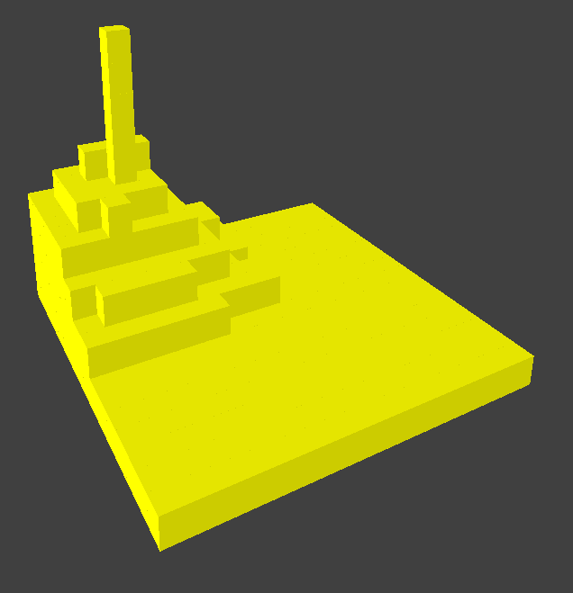
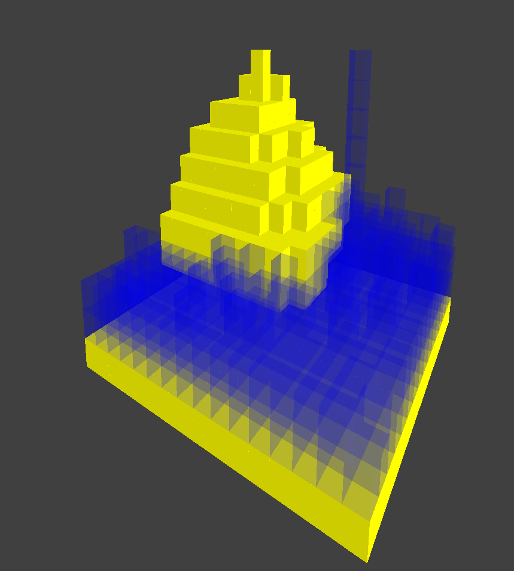

Based on our proposal, our milestone goal was to create a demo of sand falling from a deterministic spawning point and settling on the ground with collision from other sand blocks. We were able to accomplish exactly this for our milestone.
We built our project off of Project 4's codebase, copying over the code and keeping files/functions that were relevant to our project. Then, we started on creating the viewport and callbacks. We used HW4 logic and code for camera to achieve correct perspective.
Once our viewport had been created, we focused on displaying a single cube. In order to define a cube, we calculated the position and normals of 6 faces, about a given corner position.
Once our viewport could successfully display a single cube, we then implemented some helper functions for spawning and moving sand/air blocks within a 16 x 16 chunk, which is the current world space of our demo. Now we could simulate sand falling by looping through every cell in the chunk and updating them using their respective material update functions.
Our sand update function logic is based on cellular automaton. The algorithm is as follows:
dirs of all 8 adjacent vector directions below this cell: Vector3d(dx, dy, dz).size(dirs) - 1. Store the Vector3D at that index temporarily, then replace that index with the last Vector3D in dirs. This allows us to remove adjacent directions from dirs, preventing them from being selected again.size(dirs) > 0, keep generating random indexes and checking if the adjacent cell represented by that index is empty (AIR). If the adjacent cell is empty, swap with it and return.From our work on the milestone, the simulation based on cellular automaton looks as we expected. Below is a screenshot of the sand pile that is created from our algorithm. It is difficult to comment on the efficiency of our implementation, as our demo only works on a 16x16 chunk, which is far from the size we intend to make our final demo.
We also managed to simulate water and sand blocks falling together with some success. We created a custom shader for falling water, and we also gave the water a degree of transparency. In addition, we customized the falling of the water blocks, so that they can not only flow down but also horizontally, which is due to water's viscous nature.
We are on track with our schedule, as we were able to accomplish everything we initially wanted for our milestone. Next steps for us are to simulate on a larger world space and optimize if needed. From our proposal, we were thinking of optimizing by simulating only interesting areas of the world. We also need to add a GUI and allow users to interact more cleanly with the viewport. We also need to add more materials than just sand, and implement interactions between them. We don't feel the need to change our proposed schedule much, as we believe we are on track.